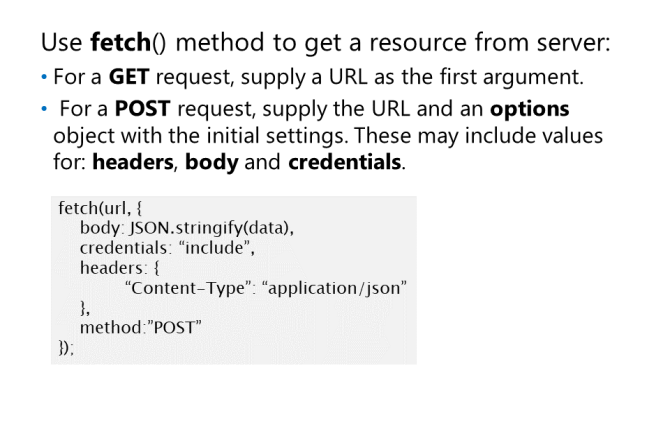
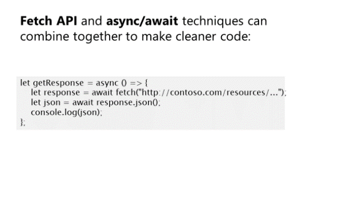

Korzystanie z Fetch API do wysyłania żądań asynchronicznych
Aby wysłać zapytanie do serwera, używamy funkcji fetch()
Ta metoda ma dwa
argumenty: pierwszy to URL, który jest
wymagany. Drugi to obiekt opcji
które pozwalają skonfigurować metodę, treść,
nagłówki itp., co jest opcjonalne.
Żądanie GET przy użyciu metody fetch():
fetch("http://contoso.com/resources/...");
Jeśli nie skonfigurujesz metody żądania, fetch() użyje GET jako swojej
domyślnej metody żądania.
Możemy również wysyłać dane za pomocą funkcji fetch(). Musimy tylko użyć opcjonalnego obiektu opcji i ustawić przynajmniej
trzy z jego opcji:
Metoda żądania(method). Opcjonalne wartości to POST, PUT lub DEL.
Nagłówki żądania(headers). Najważniejszym nagłówkiem jest Content-Type.
Treść żądania(body). Rzeczywista zawartość do wysłania na serwer.
Możesz przekazać obiekt opcji do fetch() jako zewnętrzny obiekt JavaScript lub za pomocą dosłownego obiektu
notacji, jak pokazano w poniższym przykładzie:
Wysyłanie danych do serwera za pomocą Fetch API.
Użycie obiektu opcji do skonfigurowania żądania:
Jeśli chcesz wysłać dane formularza, które zwykle są danymi wprowadzanymi przez użytkownika podczas wypełniania formularza na stronie,
możemy użyć obiektu FormData.
Poniższy przykład pokazuje, jak dołączyć pliki cookie do żądania za pomocą Fetch API:
Korzystanie z opcji obiektu w celu uwzględnienia plików cookie w żądaniu.
Obsługa Promises
API Fetch został zbudowany do użycia
Promises. Podczas wywoływania metody fetch():
Obiekt Promise jest zwracany i
będzie zawierać obiekt Response i można pobierać dane zwrócone przez
serwer, używając znanej metody then() z
obiekt Promise:
fetch("http://contoso.com/resources/...")
.then(response => {/* get server response and do something… */});
Odpowiedź zachowuje dane we właściwości body. Dane są opakowane w obiekt typu:
ReadableStream. Aby pobrać dane z tego strumienia, użyj jednej z następujących metod:
json(). Dla danych sformatowanych jako JSON.
blob(). W przypadku danych typu: obraz itp.
text(). Dla danych sformatowanych jako ciąg znaków, takich jak dane XML lub HTML
Każdy z nich zwraca obiekt Promise, który rozpoznaje dane w odpowiednim formacie.
Oto przykład, jak wyodrębnić dane JSON z odpowiedzi:
fetch("http://contoso.com/resources/...")
.then(response => response.json())
.then(data => console.log(data));
Błędy w interfejsie Fetch API są obsługiwane tak, jak w przypadku Promises. Używamy metody catch() promise
obiekt:
Korzystanie z funkcji asynchronicznych

Fetch API i funkcje asynchroniczne mogą działać
razem. Dzięki nim możemy zrobić
program do czyszczenia kodu.
Poniższy przykład pokazuje, jak połączyć
Fetch API z async/await:
Zarówno fetch(), jak i response.json() zwracają obiekt Promise, więc możemy użyć await
aż Promise zostanie rozwiązany, aby uzyskać jego wartość.
Na koniec poprawmy poprzedni kod, łącząc funkcje Fetch API, async/await i arrow functions
razem: